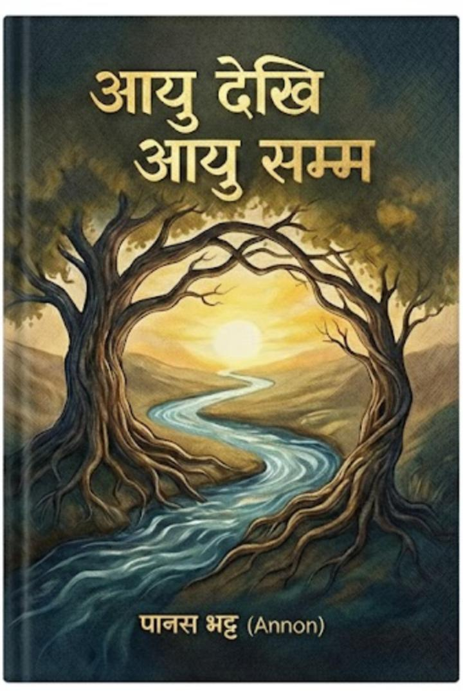

This poem collection began during a quiet phase of my life—when writing was simply a way to pass time, a small habit I carried without giving it much meaning. My poems were simple, personal reflections born out of random thoughts and idle moments. But everything changed with the arrival of someone who entered my life unexpectedly. Her presence shifted the entire definition of poetry for me. Suddenly, my words carried purpose, emotion, and depth. I began writing not just for myself, but for the feelings she awakened in me. What was once a pastime slowly transformed into a meaningful journey of expression, memory, and connection.

In recent days, I have taken steps to preserve and share this journey through two different projects. The first is a digital version of my collection, designed to make my poems easily accessible to anyone. You can explore it by scanning the QR code below, which takes you directly to Instagram to my digital archive-soulprint.

The second project is the publication of my book, a more permanent form that captures my poetic evolution. The cover page—beautifully designed image—is shown below. Both projects represent not just my growth as a writer, but the story of how a single person changed the direction of my poetry forever.
My First Song My Second Song"I have recently taken a new creative step by transforming my poems into songs. While poetry allows me to express emotions and ideas through carefully chosen words and rhythm, songwriting adds another dimension—melody and musicality. It’s exciting to see my verses come alive with tune, giving them a voice that resonates beyond the page. This journey from writing poems to composing songs has not only deepened my appreciation for language but also opened a fresh path for connecting with others through music."